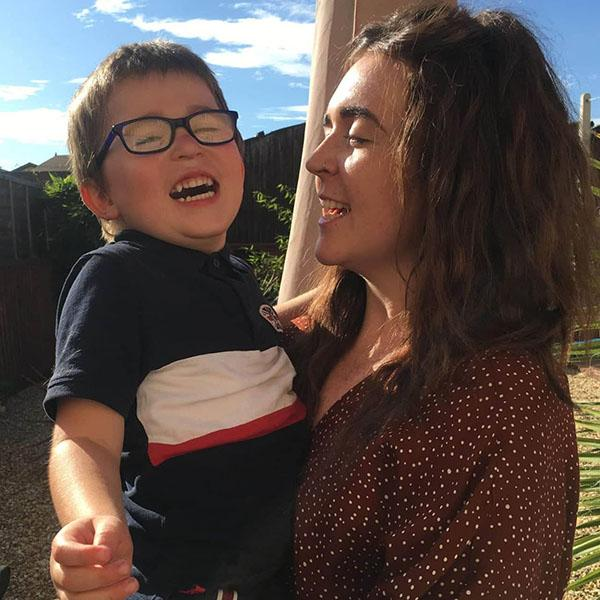

Your life-changing gift helps us educate, advocate, and find cures
What is Epilepsy?
Epilepsy is a neurological disorder characterized by recurrent, unprovoked seizures. It is diagnosed after a person has
experienced two unprovoked seizures, or one unprovoked seizure with a high likelihood of more, unrelated to a specific
cause. Seizures manifest as sudden bursts of electrical activity in the brain that can affect appearance or behavior.
What is a Seizure?
Seizures are sudden surges of abnormal and excessive electrical activity in your brain and can affect how you appear or act.
Where and how the seizure presents itself can have profound effects.
A Demon's Whispers, a story inspired by Damon Thorley's epilepsy
Damon is a 26 year old author, who recently published his debut book 'A Demon's Whispers', where the main antagonist
is heavily based from his experience of living with epilepsy. He tells us about his life with epilepsy, everything
from dealing with bullying in school, and depression.
By Maytee Ramos, April 18, 2024
Artist Noemi Manser: Art has been her safe, healing space.
Noemi Manser, a Swiss born conceptual artist and muralist, grew up with epilepsy. Her art series ‘Connecting Brains’
depicts symbolic androgynous faces which she hopes will highlight the importance of uniting individuals and encouraging
human connections.
By Noëmi Manser, 3 November, 2022

The challenge of becoming a mum with epilepsy
Lyndsey, 26, describes the impact that her epilepsy has had on her and her little boy, Caelan, and explains why she and
her partner have opted for genetic screening before having a second baby by IVF.